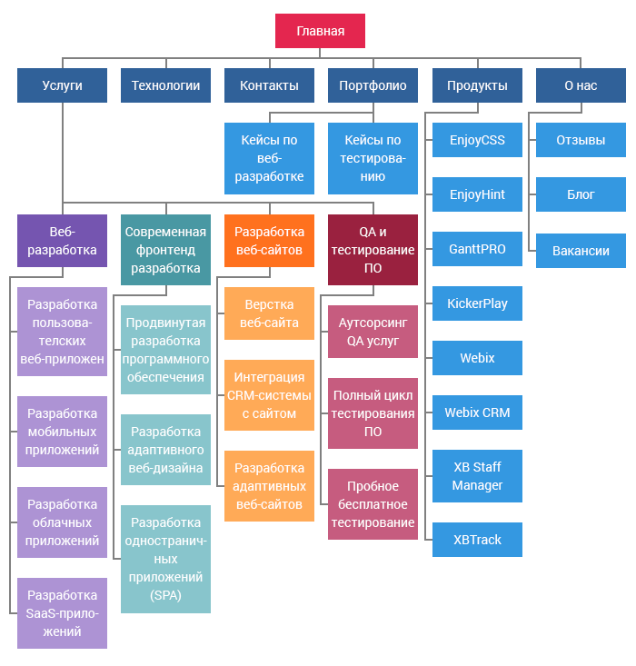

Информация о нашей компании
Мы воплощаем в жизнь самые смелые проекты. Используя высокие технологии.Предлагаем стильный и современный дизайн, Высокотехничный функционал, удобство в управлении.
Профессиональная разработка веб-сайтов «под ключ»
Профессионально разработаем веб-сайтов «под ключ». Создадим веб-дизайн, выполним верстку и программирование. При заказе веб-сайта у нас вы получите полностью готовый продукт, стоимость которого включает все необходимое - от определения бизнес целей до непосредственного создания и запуска рекламной кампании.
Программирование и API интеграция
Мы разрабатываем современные функциональные облачные системы и веб приложения, предназначенные для автоматизации рабочих процессов предприятий и организаций. Наши системы выполняют важнейшие задачи, которые стоят перед собственниками бизнеса. Мы также интегрируем готовые решения и сторонние приложения в существующие веб системы заказчика.
Создание мобильных приложений
Интеграция в одну информационную корпоративную сеть. Один из самых эффективных способов информирования потенциальных клиентов и партнеров об услугах и продукции компании. Затраты на изготовление тиража мультимедиа-презентаций в 3-5 раз ниже, чем на изготовление тиража печатных полноцветных брошюр
Жизненный цикл разработки веб-сайта
Этап 1. Сбор информации: назначение, основные цели и целевая аудитория
Этап предварительного исследования и сбора информации определяет то, как будут протекать все последующие стадии разработки. Самое важное на этом этапе — получить ясное и полное понимание того, каким будет назначение вашего будущего сайта, каких целей вы хотите достичь с его помощью, а также какова целевая аудитория, которую вы хотите на него привлечь. Такая своеобразная анкета веб-разработки позволит определить наилучшую стратегию дальнейшего развития проекта. Новостные порталы отличаются от развлекательных сайтов, а сайты для подростков отличаются от таковых для взрослой аудитории. Разные сайты предоставляют посетителям разную функциональность, а значит разные технологии должны использоваться в том или ином случае. Детально составленный план, созданный на основе данных, полученных на этом этапе, может предотвратить вас от затраты дополнительных ресурсов на решение непредвиденных трудностей, таких как смена дизайна или добавление функционала, не предусмотренного изначально.
Этап 2. Планирование: создание карты сайта и макета
На этой стадии разработки заказчик уже может получить представление о том, каким будет будущий сайт. На основе информации, собранной на предыдущей стадии, создается карта сайта (sitemap). Так, например, выглядит карта сайта IT.BY:
Карта сайта описывает взаимосвязь между различными частями вашего сайта. Это помогает понять, насколько удобным в использовании он будет. По карте сайта можно определить «расстояние» от главной страницы до других страниц, что помогает судить о том, насколько просто пользователю будет добраться до интересующей его информации. Основная цель создания карты сайта — создать легкий с точки зрения навигации и дружественный к пользователю продукт. Это позволяет понять внутреннюю структуру будущего сайта, но не описывает то, как сайт будет выглядеть. Иногда, прежде чем приступить к написанию кода или к разработке дизайна, может быть важным получить одобрение заказчика. В этом случае создается макет (wireframe или mock-up). Макет представляет из себя визуальное представление будущего интерфейса сайта. Но, в отличие например, от шаблона, о котором мы поговорим далее, он не содержит элементов дизайна, таких как цвет, логотипы, и т.п. Он только описывает, какие элементы будут помещены на страницу и как они будут расположены. Макет представляет собой своего рода набросок будущего сайта. Вы можете использовать один из доступных онлайн-сервисов для создания макетов. Обычно мы используем Moqups.
Этап 3. Дизайн: шаблон страницы, обзор и утверждение
На этом этапе веб-сайт становится еще ближе к своей окончательной форме. Весь визуальный контент, такой как изображения, фото и видео, создается именно сейчас. И опять-таки вся информация, которая была собрана на самой первой стадии проекта, крайне важна на этом шагу. Интересы заказчика, а также целевая аудитория должны учитываться в первую очередь во время работы над дизайном. Дизайнером на данном этапе создается шаблон страницы (page layout). Основное назначение шаблона — визуализировать структуру страницы, ее содержимое, а также отобразить основной функционал. На этот раз, в отличие от макета, используются элементы дизайна. Шаблон содержит цвета, логотипы и изображения. Он дает возможность судить о том, как в конечном результате будет выглядеть готовый сайт. После создания шаблон может быть отправлен заказчику. После обзора заказчиком проделанной работы, он присылает свой отзыв. Если его не устраивают какие-то аспекты дизайна, вы должны изменить существующий шаблон и снова отправить его заказчику. Этот цикл повторяется до тех пор, пока заказчик не будет полностью удовлетворен результатом.
Этап 4. Создание контента
Процесс создания контента обычно проходит параллельно с другими стадиями разработки и его роль не стоит недооценивать. На данном шаге необходимо описать самую суть того, что вы хотите донести до аудитории своего веб-сайта, а также добавить CTA (призыв к действию). Эта стадия включает в себя также создание привлекательных и броских заголовков, написание и редактирование текста, компиляция существующих текстов и т.д. Все это требует затраты дополнительного времени и усилий. Как правило, заказчик предоставляет контент, уже готовый к тому, чтобы быть размещенным на сайте. Важно, чтобы весь контент был подготовлен до или во время стадии разработки.
Этап 5. Верстка и разработка
теперь вы наконец-то можете перейти непосредственно к верстке сайта. Все графические элементы, разработанные ранее, используются на данной стадии. Обычно в первую очередь создается домашняя страница, а затем к ней добавляются остальные страницы в соответствии с иерархией, разработанной на этапе создания карты сайта. Также на этом этапе происходит установка CMS. Все статичные элементы веб-сайта, дизайн которых был разработан ранее при создании шаблона, превращаются в реальные динамические интерактивные элементы веб-страницы. Немаловажная задача — проведение SEO-оптимизации (Search Engine Optimization), которая представляет собой оптимизацию элементов веб-страницы (заголовков, описания, ключевых слов) с целью поднятия позиций сайта в результатах выдачи поисковых систем. Валидность кода является крайне важной в этом случае.
Этап 6. Тестирование и запуск
Тестирование является, наверное, самой рутинной частью разработки. Каждая ссылка должна быть проверена, каждая форма и каждый скрипт должны быть протестированы. Текст должен быть проверен программой проверки орфографии для выявления возможных опечаток и ошибок. Валидаторы кода используются для того, чтобы быть уверенным, что созданный на предыдущем этапе код полностью соответствует современным веб-стандартам. Это может оказаться крайне важным, если для вас критична, например, кроссбраузерная совместимость. После того, ка вы проверили и перепроверили ваш сайт, он может быть загружен на сервер. Обычно для этого используется FTP-клиент. После загрузки сайта на сервер, необходимо провести еще один тест для того, чтобы быть уверенным, что во время загрузки не произошло непредвиденных ошибок и все файлы целы и невредимы.
Этап 7. Поддержка: отзывы пользователей и регулярные обновления
Важно понимать, что веб-сайт представляет из себя скорее сервис, чем продукт. Недостаточно просто «доставить» его потребителю. Также важно быть уверенным в том, что все работает, как и было запланировано, а пользователи удовлетворены конечным продуктом. Нужно также быть готовым быстро вносить изменения, если это будет необходимо. Система отзывов позволит вам выявлять возникшие проблемы, с которыми сталкиваются посетители сайта. Самой критичной задачей в подобных случаях будет решение возникших проблем настолько быстро, насколько это возможно. В противном случае, ваши пользователи скорее предпочтут другой ресурс, чем будут мириться с неудобствами. Также не следует забывать о регулярном обновлении CMS. Регулярные обновления избавят вас от ошибок и проблем с безопасностью.
Основная специализация IT.BY
- Проектирование и разработка web-представительств для корпоративных клиентов
- Создание сайтов по SAAS технологии
- Подготовка и проведение рекламных кампаний в сети internet, интернет маркетинг
- Автоматизация бизнес процессов, в том числе на основе web технологий
- Предоставление услуг хостинга и регистрации доменных имен
- Информационная и техническая поддержка реализованных проектов
Веб-дизайн
Каждый сайт должен быть по-своему привлекателен. А первое, на что посетитель обращает внимание – это дизайн, т.е. все визуальное представление сайта, включая пиктограммы и иконки, шрифты, иллюстрации, и т.д.
От того, насколько дружественно и качественно разработан дизайн, зависит дальнейшее пребывание пользователя на Вашем сайте.
HTML верстка сайтов
Верстка макета (HTML верстка) – это процесс формирования веб-страницы, по средствам кода соответствующего языка разметки (HTML, XML и т.п.), так же состоящей из стилей оформления (CSS) и подгружаемых картинок и фонов, на которые специальным образом разбивается макет сайта, в соответствии с дизайном, как правило, в формате PSD.
Мы трансформируем желания клиентов в реальность!
Видео уроки по html